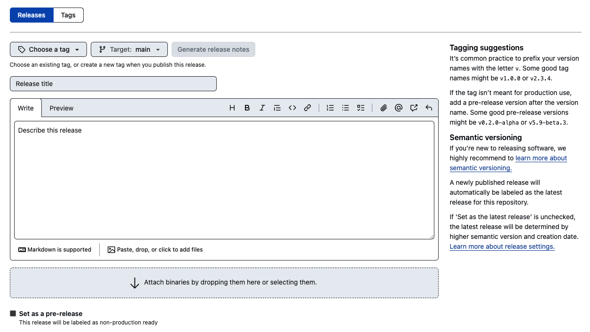

| Metadata field | Definition | Format | Ontology | Example |
|---|---|---|---|---|
| assay_ID | Identifier for the assay that is at least unique within the project | <Assay-ID\>_<keyword\>_YYYYMMDD | NA | CHIP_Oct4_20200101 |
| assay_type | The type of experiment performed, eg ATAC-seq or seqFISH | NA | ontology field- e.g. EFO or OBI | ChIPseq |
| assay_subtype | More specific type or assay like bulk nascent RNAseq or single cell ATACseq | NA | ontology field- e.g. EFO or OBI | bulk ChIPseq |
| owner | Owner of the assay (who made the experiment?). | <First Name\> <Last Name\> | NA | Jose Romero |
| platform | The type of instrument used to perform the assay, eg Illumina HiSeq 4000 or Fluidigm C1 microfluidics platform | NA | ontology field- e.g. EFO or OBI | Illumina |
| extraction_method | Technique used to extract the nucleic acid from the cell | NA | ontology field- e.g. EFO or OBI | NA |
| library_method | Technique used to amplify a cDNA library | NA | ontology field- e.g. EFO or OBI | NA |
| external_accessions | Accession numbers from external resources to which assay or protocol information was submitted | NA | eg protocols.io, AE, GEO accession number, etc | GSEXXXXX |
| keyword | Keyword for easy identification | wordWord | camelCase | Oct4ChIP |
| date | Date of assay creation | YYYYMMDD | NA | 20200101 |
| nsamples | Number of samples analyzed in this assay | <integer\> | NA | 9 |
| is_paired | Paired fastq files or not | <single OR paired\> | NA | single |
| pipeline | Pipeline used to process data and version | NA | NA | nf-core/chipseq -r 1.0 |
| strandedness | The strandedness of the cDNA library | <+ OR - OR *\> | NA | * |
| processed_by | Who processed the data | <First Name\> <Last Name\> | NA | Sarah Lundregan |
| organism | Organism origin | <Genus species\> | Taxonomy name | Mus musculus |
| origin | Is internal or external (from a public resources) data | <internal OR external\> | NA | internal |
| path | Path to files | </path/to/file\> | NA | NA |
| short_desc | Short description of the assay | plain text | NA | Oct4 ChIP after pERK activation |
| ELN_ID | ID of the experiment/assay in your Electronic Lab Notebook software, like labguru or benchling | plain text | NA | NA |
Practical material
Course Overview
⏰ Time Estimation: X minutes
üí¨ Learning Objectives:
- Organize and structure your data and data analysis with Cookiecutter templates
- Establish metadata fields and collect metadata when creating a cookiecutter folder
- Establish naming conventions for your data
- Make a catalog of your data
- Create GitHub repositories of your data analysis and display them as GitHub Pages
- Archive GitHub repositories on Zenodo
This is a practical version of the full RDM on NGS data workshop. The main key points of the exercises shown here are to help you organize and structure your NGS datasets and your data analyses. We will see how to keep track of your experiments metadata and how to safely version control and archive your data analyses using GitHub repositories and Zenodo. We hope that through these practical exercises and step-by-step guidance, you’ll gain valuable skills in efficiently managing and sharing your research data, enhancing the reproducibility and impact of your work.
Requirements
Ensure that all necessary tools and software are installed before proceeding with the practical exercises.
Cookicutter to create folder structure templates (
pip install cookiecutter)cruft to version control your templates (
pip install cruft)Option a. Install Quarto. We recommend Quarto as is easy to use and provides native support for notebooks (R Markdown and Jupyter Notebooks). No extensions or dependencies are needed.
Option b. Install MkDocs and MkDocs extensions using the command line.
pip install mkdocs # create webpages
pip install mkdocs-material # customize webpages
pip install mkdocs-video # add videos or embed videos from other sources
pip install mkdocs-minify-plugin # Minimize html code
pip install mkdocs-git-revision-date-localized-plugin # display last updated date
pip install mkdocs-jupyter # include Jupyter notebooks
pip install mkdocs-table-reader-plugin
pip install mkdocs-bibtex # add references in your text (`.bib`)
pip install neoteroi-mkdocs # create author cards
pip install mkdocs-table-reader-plugin # embed tabular format files (`.tsv`)1. Organize and structure your NGS data and data analysis
Applying a consistent file structure and naming conventions to your files will help you to efficiently manage your data. We will divide your NGS data and data analyses into two different types of folders:
- Assay folders: These folders contain the raw and processed NGS datasets, as well as the pipeline/workflow used to generate the processed data, provenance of the raw data, and quality control reports of the data. This data should be locked and read-only to prevent unwanted modifications.
- Project folders: These folders contain all the necessary files for a specific research project. A project may use several assays or results from other projects. The assay data should not be copied or duplicated, but linked from the source.
Projects and Assays are separated from each other because a project may use one or more assays to answer a scientific question, and assays may be reused several times in different projects. This could be, for example, all the data analysis related to a publication (an RNAseq and a ChIPseq experiment), or a comparison between a previous ATACseq experiment (which was used for a older project) with a new laboratory protocol.
You could also create Genomic resources folders things such as genome references (fasta files) and annotations (gtf files) for different species, as well as indexes for different alignment algorithms. If you want to know more, feel free to check the relevant full lesson
This will help you to keep your data tidied up, especially if you are working in a big lab where assays may be used for different purposes and by different people!
Assay folder
For each NGS experiment, there should be an Assay folder that will contain all experimental datasets, that is, an Assay (raw files and pipeline processed files). Raw files should not be modified at all, but you should probably lock modifications to the final results once you are done with preprocessing the data. This will help you prevent unwanted modifications to the data. Each Assay subfolder should be named in a way that is unique, easily readable, distinguishable, and understood at a glance. For example, you could name an NGS assay using an acronym for the type of NGS assay (RNAseq, ChIPseq, ATACseq), a keyword that represents a unique descriptive element of that assay, and the date. Like this:
<Assay-ID>_<keyword>_YYYYMMDDFor example CHIP_Oct4_20230101 is a ChIPseq assay made on 1st January 2023 with the keyword Oct4, so it is easily identifiable by the eye. Next, let’s take a look at a possible folder structure and what kind of files you can find there.
CHIP_Oct4_20230101/
├── README.md
├── metadata.yml
├── pipeline.md
├── processed
└── raw
├── .fastq.gz
└── samplesheet.csv- README.md: Long description of the assay in markdown format. It should contain provenance of the raw NGS data (samples, laboratory protocols used, the aim of the assay, etc)
- metadata.yml: metadata file for the assay describing different keys and important information regarding that assay (see this lesson).
- pipeline.md: description of the pipeline used to process raw data, as well as the commands used to run the pipeline.
- processed: folder with results of the preprocessing pipeline. Contents depend on the pipeline used.
- raw: folder with the raw data.
- .fastq.gz:In the case of NGS assays, there should be fastq files.
- samplesheet.csv: file that contains metadata information for the samples. This file is used to run the nf-core pipelines. You can also add extra columns with info regarding the experimental variables and batches so it can be used for downstream analysis as well.
Project folder
On the other hand, we have the other type of folder called Projects. In this folder, you will save a subfolder for each project that you (or your lab) work on. Each Project subfolder will contain project information and all the data analysis notebooks and scripts used in that project.
As like for an Assay folder, the Project folder should be named in a way that is unique, easily readable, distinguishable, and understood at a glance. For example, you could name it after the main author’s initials, a keyword that represents a unique descriptive element of that assay, and the date:
<author_initials>_<keyword>_YYYYMMDDFor example, JARH_Oct4_20230101, is a project about the gene Oct4 owned by Jose Alejandro Romero Herrera, created on the 1st of January of 2023.
Next, let’s take a look at a possible folder structure and what kind of files you can find there.
<author_initials>_<keyword>_YYYYMMDD
├── data
│ └── <Assay-ID>_<keyword>_YYYYMMDD/
├── documents
│ └── Non-sensitive_NGS_research_project_template.docx
├── notebooks
│ └── 01_data_analysis.rmd
├── README.md
├── reports
│ ├── figures
│ │ └── 01_data_analysis/
│ │ └── heatmap_sampleCor_20230102.png
│ └── 01_data_analysis.html
├── requirements.txt
├── results
│ └── 01_data_analysis/
│ └── DEA_treat-control_LFC1_p01.tsv
├── scripts
└── metadata.yml- data: a folder that contains symlinks or shortcuts to where the data is, avoiding copying and modification of original files.
- documents: a folder containing Word documents, slides, or PDFs related to the project, such as explanations of the data or project, papers, etc. It also contains your Data Management Plan.
- Non-sensitive_NGS_research_project_template.docx. This is a pre-filled Data Management Plan based on the Horizon Europe guidelines.
- notebooks: a folder containing Jupyter, R markdown, or Quarto notebooks with the actual data analysis.
- README.md: detailed description of the project in markdown format.
- reports: notebooks rendered as HTML/docx/pdf versions, ideal for sharing with colleagues and also as a formal report of the data analysis procedure.
- figures: figures produced upon rendering notebooks. The figures will be saved under a subfolder named after the notebook that created them. This is for provenance purposes so we know which notebook created which figures.
- requirements.txt: file explaining what software and libraries/packages and their versions are necessary to reproduce the code.
- results: results from the data analysis, such as tables with differentially expressed genes, enrichment results, etc.
- scripts: folder containing helper scripts needed to run data analysis or reproduce the work of the folder
- description.yml: a short description of the project.
- metadata.yml: metadata file for the assay describing different keys (see this lesson).
Template engine
It is very easy to create a folder template using cookiecutter. Cookiecutter is a command-line utility that creates projects from cookiecutters (that is, a template), e.g. creating a Python package project from a Python package project template. Here you can find an example of a cookiecutter folder template-directed to NGS data, where we have applied the structures explained in the previous sections. You are very welcome to adapt it or modify it to your needs!
Quick tutorial on cookiecutter
Creating a Cookiecutter template from scratch involves defining a folder structure, creating a cookiecutter.json file, and specifying the placeholders (keywords) that will be replaced during project generation. Let’s walk through the process step by step:
Step 1: Create a Folder Template
Start by creating a folder with the structure you want for your template. For example, let’s create a simple Python project template:
my_template/
|-- {{cookiecutter.project_name}}
| |-- main.py
|-- tests
| |-- test_{{cookiecutter.project_name}}.py
|-- README.mdIn this example, {cookiecutter.project_name} is a placeholder that will be replaced with the actual project name when the template is used.
Step 4: Explore the Generated Project
Once the generation process is complete, navigate to the directory where Cookiecutter created the new project. You will see a project structure with the placeholders replaced by the values you provided.
Exercise 1: Create your own template
Using Cookiecutter, create your own templates for your folders. You do not need to copy exactly our suggestions, adjust your template to your own needs!
Requirements:
Using Cookiecutter, create your own templates for your folders. You do not need to copy exactly our suggestions, adjust your template to your own needs! In order to create your cookiecutter template, you will need to install Python, cookiecutter, Git, and a GitHub account. If you do not have Git and a GitHub account, we suggest you do one as soon as possible. We will take a deeper look at Git and GitHub in the version control lesson.
We have prepared already two simple Cookiecutter templates in GitHub repositories.
Assay
- First, fork our Assay folder template from the GitHub page into your own account/organization.

- Then, use
git clone <your URL to the template>to put it on your computer. - Modify the contents of the repository so that it matches the Assay example above. You are welcome to make changes as you please!
- Modify the
cookiecutter.jsonfile so that it will include the Assay name template - Git add, commit, and push your changes
- Test your folder by using
cookiecutter <URL to your GitHub repository for "assay-template>
Project
- First, fork our Project folder template from the GitHub page into your own account/organization.

- Then, use
git clone <your URL to the template>to put it on your computer. - Modify the contents of the repository so that it matches the Project example above. You are welcome to make changes as you please!
- Modify the
cookiecutter.jsonfile so that it will include the Project name template - Git add, commit, and push your changes
- Test your folder by using
cookiecutter <URL to your GitHub repository for "project-template>
2. Metadata
Metadata is the behind-the-scenes information that makes sense of data and gives context and structure. For NGS data, metadata includes information such as when and where the data was collected, what it represents, and how it was processed. Let’s check what kind of relevant metadata is available for NGS data and how to capture it in your Assay or Project folders. Both of these folders contain a metadata.yml file and a README.md file. In this section, we will check what kind of information you should collect in each of these files.
Metadata and controlled vocabularies
In order for metadata to be most useful, you should try to use controlled vocabularies for all your fields. For example, tissue could be described with the UBERON ontologies, species using the NCBI taxonomy, diseases using the Mondo database, etc. Unfortunately, implementing a systematic way of using these vocabularies is rather complex and outside the scope of this workshop, but you are very welcome to try to implement them on your own!
README.md file
The README.md file is a markdown file that allows you to write a long description of the data placed in a folder. Since it is a markdown file, you are able to write in rich text format (bold, italic, include links, etc) what is inside the folder, why it was created/collected, and how and when. If it is an Assay folder, you could include the laboratory protocol used to generate the samples, images explaining the experiment design, a summary of the results of the experiment, and any sort of comments that would help to understand the context of the experiment. On the other hand, a ‘Project’ README file may contain a description of the project, what are its aims, why is it important, what ‘Assays’ is it using, how to interpret the code notebooks, a summary of the results and, again, any sort of comments that would help to understand the project.
Here is an example of a README file for a Project folder:
# NGS Analysis Project: Exploring Gene Expression in Human Tissues
## Aims
This project aims to investigate gene expression patterns across various human tissues using Next Generation Sequencing (NGS) data. By analyzing the transcriptomes of different tissues, we seek to uncover tissue-specific gene expression profiles and identify potential markers associated with specific biological functions or diseases.
## Why It's Important
Understanding tissue-specific gene expression is crucial for deciphering the molecular basis of health and disease. Identifying genes that are uniquely expressed in certain tissues can provide insights into tissue function, development, and potential therapeutic targets. This project contributes to our broader understanding of human biology and has implications for personalized medicine and disease research.
## Datasets
We have used internal datasets with IDs: RNA_humanSkin_20201030, RNA_humanBrain_20210102, RNA_humanLung_20220304.
In addition, we utilized publicly available NGS datasets from the GTEx (Genotype-Tissue Expression) project, which provides comprehensive RNA-seq data across multiple human tissues. These datasets offer a wealth of information on gene expression levels and isoform variations across diverse tissues, making them ideal for our analysis.
## Summary of Results
Our analysis revealed distinct gene expression patterns among different human tissues. We identified tissue-specific genes enriched in brain tissues, highlighting their potential roles in neurodevelopment and function. Additionally, we found a set of genes that exhibit consistent expression across a range of tissues, suggesting their fundamental importance in basic cellular processes.
Furthermore, our differential expression analysis unveiled significant changes in gene expression between healthy and diseased tissues, shedding light on potential molecular factors underlying various diseases. Overall, this project underscores the power of NGS data in unraveling intricate gene expression networks and their implications for human health.
---
For more details, refer to our [Jupyter Notebook](link-to-jupyter-notebook.ipynb) for the complete analysis pipeline and code.metadata.yml
The metadata file is a yml file, which is a text document that contains data formatted using a human-readable data format for data serialization.

Metadata fields
There is a ton of information you can collect regarding an NGS assay or a project. Some information fields are very general, such as author or date, while others are specific to the Assay or Project folder. Below, we will take a look at the minimal information you should collect in each of the folders.
General metadata fields
Here you can find a list of suggestions for general metadata fields that can be used for both assays and project folders:
- Title: A brief yet informative name for the dataset.
- Author(s): The individual(s) or organization responsible for creating the dataset. You can use your ORCID
- Date Created: The date when the dataset was originally generated or compiled. Use YYYY-MM-DD format!
- Description: A short narrative explaining the content, purpose, and context.
- Keywords: A set of descriptive terms or phrases that capture the folder’s main topics and attributes.
- Version: The version number or identifier for the folder, useful for tracking changes.
- License: The type of license or terms of use associated with the dataset/project.
Assay metadata fields
Here you will find a table with possible metadata fields that you can use to annotate and track your Assay folders:
Project metadata fields
Here you will find a table with possible metadata fields that you can use to annotate and track your Project folders:
| Metadata field | Definition | Format | Ontology | Example |
|---|---|---|---|---|
| project | Project ID | <surname\>_et_al_2023 | NA | proks_et_al_2023 |
| author | Owner of the project | <First name\> <Surname\> | NA | Martin Proks |
| date | Date of creation | YYYYMMDD | NA | 20230101 |
| description | Short description of the project | Plain text | NA | This is a project describing the effect of Oct4 perturbation after pERK activation |
More info
The information provided in this lesson is not at all exhaustive. There might be many more fields and controlled vocabularies that could be useful for your NGS data. We recommend that you take a look at the following sources for more information!
- Transcriptomics metadata standards and fields
- Bionty: Biological ontologies for data scientists.
Exercise 2: modify the metadata.yml files in your Cookiecutter templates
We have seen some examples of metadata for NGS data. It is time now to customize your Cookiecutter templates and modify the metadata.yml files so that they fit your needs!
- Think about what kind of metadata you would like to include.
- Modify the
cookiecutter.jsonfile so that when you create a new folder template, all the metadata is filled accordingly.
Hint

- Modify the
metadata.ymlfile so that it includes the metadata recorded by thecookiecutter.jsonfile.
Hint

- Modify the
README.mdfile so that it includes the short description recorded by thecookiecutter.jsonfile. - Git add, commit, and push the changes to your template.
- Test your folders by using the command
cookiecutter <URL to your cookiecutter repository in GitHub>
3. Naming conventions
Using consistent naming conventions is important in scientific research as it helps with the organization and retrieval of data or results. By adopting standardized naming conventions, researchers ensure that files, experiments, or data sets are labeled in a clear, logical manner. This makes it easier to locate and compare similar types of data or results, even when dealing with large datasets or multiple experiments. For instance, in genomics, employing uniform naming conventions for files related to specific experiments or samples allows for swift identification and comparison of relevant data, streamlining the research process and contributing to the reproducibility of findings. This practice promotes efficiency, collaboration, and the integrity of scientific work.
General tips
Below you will find a small list of general tips to follow when you name a folder or a file:
- Use only alphanumeric characters to write a word: a to z and 0 to 9
- Avoid special characters: ~!@#$%^&*()`“|
- Date format: use
YYYYMMDDformat. For example: 20230101. - Authors: use initials. For example: JARH
- Don’t use spaces! Computers get very confused when you need to point a path to a file and it contains spaces! Instead:
- Separate field sections are separated by underscores
_. - Words in each section are written in camelCase. It would look then like this:
field1_word1Word2.txt. For example:heatmap_sampleCor_20230101.png. The first field indicates what this file is, i.e., a heatmap. The second field is what is being plotted, i.e., sample correlations; since the field contains two words, they are written in camelCase. The third field is the date when the image was created.
- Separate field sections are separated by underscores
- Use as short fields as possible. You can try to use understandable abbreviations, like LFC for LogFoldChange, Cor for correlations, Dist for distances, etc.
- Avoid long names as much as you can, be concise!
- Avoid creating many sublevels of folders.
- Write down your naming convention pattern and document it in the README file
- When using a sequential numbering system, use leading zeros to make sure files are sorted in sequential order. Use
01instead of just1if your sequence only goes up to99. - Versions should be used as the last element, and use at least two digits with a leading 0 (e.g. v01, v02)
Suggestions for NGS data
More info on naming conventions for different types of files and analysis is in development.
| name | description | naming_convention | file format | example |
|---|---|---|---|---|
| .fastq | raw sequencing reads | nan | nan | sampleID_run_read1.fastq |
| .fastqc | quality control from fastqc | nan | nan | sampleID_run_read1.fastqc |
| .bam | aligned reads | nan | nan | sampleID_run_read1.bam |
| GTF | sequence annotation | nan | nan | one of https://www.gencodegenes.org/ |
| GFF | sequence annotation | nan | nan | one of https://www.gencodegenes.org/ |
| .bed | genome locations | nan | nan | nan |
| .bigwig | genome coverage | nan | nan | nan |
| .fasta | sequence data (nucleotide/aminoacid) | nan | nan | one of https://www.gencodegenes.org/ |
| Multiqc report | QC aggregated report | <assayID\>_YYYYMMDD.multiqc | multiqc | RNA_20200101.multiqc |
| Count matrix | final count matrix | <assayID\>_cm_aligner_YYYYMMDD.tsv | tsv | RNA_cm_salmon_20200101.tsv |
| DEA | differential expression analysis results | DEA_<condition1-condition2\>_LFC<absolute_threshold\>_p<pvalue decimals\>_YYYYMMDD.tsv | tsv | DEA_treat-untreat_LFC1_p01_20200101.tsv |
| DBA | differential binding analysis results | DBA_<condition1-condition2\>_LFC<absolute_threshold\>_p<pvalue decimals\>_YYYYMMDD.tsv | tsv | DBA_treat-untreat_LFC1_p01_20200101.tsv |
| MAplot | MA plot | MAplot_<condition1-condition2\>_YYYYMMDD.jpeg | jpeg | MAplot_treat-untreat_20200101.jpeg |
| Heatmap plot | Heatmap plot of anything | heatmap_<type\>_YYYYMMDD.jpeg | jpeg | heatmap_sampleCor_20200101.jpeg |
| Volcano plot | Volcano plot | volcano_<condition1-condition2\>_YYYYMMDD.jpeg | jpeg | volcano_treat-untreat_20200101.jpeg |
| Venn diagram | Venn diagram | venn_<type\>_YYYYMMDD.jpeg | jpeg | venn_consensus_20200101.jpeg |
| Enrichment table | Enrichment results | nan | tsv | nan |
4. Create a catalog of your assay folder
The next step is to collect all the NGS datasets that you have created in the manner explained above. Since your folders all should contain the metadata.yml file in the same place with the same metadata, it should be very easy to iteratively go through all the folders and merge all the metadata.yml files into a one single table. This table can be then browsed easily with Microsoft Excel, for example. If you are interested in making a Shiny app or Python Panel tool to interactively browse the catalog, check out this lesson.
5. Version control of your data analysis using Git and GitHub
Version control is a systematic approach to tracking changes made to a project over time. It provides a structured means of documenting alterations, allowing you to revisit and understand the evolution of your work. In research data management and data analytics, version control is very important and gives you a lot of advantages.
Git is a distributed version control system that enables developers and researchers to efficiently manage their project’s history, collaborate seamlessly, and ensure data integrity. At its core, Git operates through the following principles and mechanisms: On the other hand, GitHub is a web-based platform that enhances Git’s capabilities by providing a collaborative and centralized hub for hosting Git repositories. It offers several key functionalities, such as tracking issues, security features to safeguard your repos, and GitHub Pages that allow you to create websites to showcase your projects.
Create a GitHub organization for your lab or department
GitHub allows users to create organizations and teams that will collaborate or create repositories under the same umbrella organization. If you would like to create an educational organization in GitHub, you can do so for free! For example, you could create a GitHub account for your lab.
To create a GitHub organization, follow these instructions
After you have created the GitHub organization, make sure that you create your repositories under the organization space and not your user!
Creating a git repo online and copying your project folder
Version controlling your data analysis folders, a.k.a. Project folder, is very easy once you have set up your Cookiecutter templates. The simplest way of doing this is to first create a remote GitHub repository from the webpage (or from the Desktop app, if you are using it) with a proper project name. Then git clone that repository you just made into your Projects main folder. Then, use cookiecutter to create a project folder template and copy-paste the contents of the folder template to your cloned repo. Remember to fill up your metadata and description files! If you wish, you could already git add, commit, and push the first changes to the folders and continue from there on.
Go back to the course material lesson 5 and read the differences between converting folders to git repositories and cloning a folder to an existing git repository.
Tips to write good commit messages
If you would like to know more about Git commits and the best way to make clear Git messages, check out this post!
GitHub Pages
Once you have created your repository (and put it in GitHub), you have now the opportunity to add your data analysis reports that you created, in either Jupyter Notebooks, Rmarkdowns, or HTML reports, in a GitHub Page website. Creating a GitHub page is very simple, and we really recommend that you follow the nice tutorial that GitHub has put for you. Nonetheless, we will see the main steps in the exercise below.
There are many different ways to create your web pages. We recommend using Mkdocs and Mkdocs materials as a framework to create a nice webpage simply. The folder templates that we used as an example in the previous exercise already contain everything you need to start a webpage. Nonetheless, you will need to understand the basics of MkDocs and MkDocs materials to design a webpage to your liking. MkDocs is a static webpage generator that is very easy to use, while MkDocs materials is an extension of the tool that gives you many more options to customize your website. Check out their web pages to get started!
Exercise 5: make a project folder and publish a data analysis webpage
Configure your main GitHub Page and its repo
The first step is to set up the main GitHub Page site and the repository that will host it. This is very simple, as you will only need to follow these steps. In a Markdown document, outline the primary objectives of the organization and provide an overview of ongoing research projects. After you have created the organization/usernamegithub.io, it is time to configure your
Projectrepository webpage using MkDocs!Start a new project from Cookiecutter or use one from the previous exercise.
If you use a
Projectrepo from the first exercise, go to the next paragraph. Using Cookiecutter, create a new data analysis project. Remember to fill up your metadata and description files! After you have created the folder, it would be best to initialize a Git repo following the instructions from the previous section.Next, link your data of interest (or create a small fake dataset) and make an example of a data analysis notebook/report (this could be just a scatter plot of a random matrix of values). Depending on your setup, you might be using Jupyter Notebooks or Rmarkdowns. The extensions that we have installed using
pipallow you to directly add a Jupyter Notebook file to themkdocs.ymlnavigation section. On the other hand, if you are using Rmarkdown, you will have to knit your document into either an HTML page or a GitHub document.For the purposes of this exercise, we have already included a basic
index.mdmarkdown file that can serve as the intro page of your repo, and ajupyter_example.ipynbwith some code in it. You are welcome to modify them further to test them out!Use MkDocs to create your webpage
When you are happy with your files and are ready to publish them, make sure to add, commit, and push the changes to the remote. Then, build up your webpage using MkDocs and the
mkdocs gh-deploycommand from the same directory where themkdocs.ymlfile is. For example, if yourmkdocs.ymlfor yourProjectfolder is in/Users/JARH/Projects/project1_JARH_20231010/mkdocs.yml, docd /Users/JARH/Projects/project1_JARH_20231010/and thenmkdocs gh-deploy. This requires a couple of changes in your GitHub organization settings.Remember to make sure that your markdowns, images, reports, etc., are included in the
docsfolder and properly set up in the navigation section of yourmkdocs.ymlfile.Finally, we only need to set up the GitHub
Projectrepo settings.Publishing your GitHub Page
Go to your GitHub repo settings and configure the Page section. Since you are using the
mkdocs gh-deploycommand to publish your site in thegh-pagesbranch (as explained the the mkdocs documentation), we need to change where GitHub is fetching the website. You will need to configure the settings of this repository in GitHub so that the Page is taken from thegh-pagesbranch and therootfolder.
GitHub Pages setup - Branch should be
gh-pages - Folder should be
root
After a couple of minutes, your webpage should be ready! You should be able to see your webpage through the link provided in the Page section!
- Branch should be
Now it is also possible to include this repository webpage in your main webpage organizationgithub.io by including the link of the repo website (https://organizationgithub.io/repo-name) in the navigation section of the mkdocs.yml file in the main organizationgithub.io repo.
6. Archive GitHub repositories on Zenodo
Archives are dedicated digital platforms designed for the secure storage, curation, and dissemination of scientific data. These repositories hold great importance in the research community as they serve as reliable archives for preserving valuable datasets. Their standardized formats and robust curation processes ensure the long-term accessibility and citability of research findings. Researchers worldwide rely on these repositories to share, discover, and validate scientific information, thereby fostering transparency, collaboration, and the advancement of knowledge across various domains of study.
The next practical exercise will be to archive your Project folder that contains the data analyses performed on your NGS data in a repository like Zenodo. We can do this by linking your Zenodo account to your GitHub account.
Archiving your NGS data
In this practical lesson, we will only archive our data analyses in the Project folders. Your actual NGS data should be deposited in a domain-specific archive such as Gene Expression Omnibus (GEO) or Annotare. If you want to know more about these archives, check out this lesson
Zenodo
Zenodo[https://zenodo.org/] is an open-access digital repository designed to facilitate the archiving of scientific research outputs. It operates under the umbrella of the European Organization for Nuclear Research (CERN) and is supported by the European Commission. Zenodo accommodates a broad spectrum of research outputs, including datasets, papers, software, and multimedia files. This versatility makes it an invaluable resource for researchers across a wide array of domains, promoting transparency, collaboration, and the advancement of knowledge on a global scale.
Operating on a user-friendly web platform, Zenodo allows researchers to easily upload, share, and preserve their research data and related materials. Upon deposit, each item is assigned a unique Digital Object Identifier (DOI), granting it a citable status and ensuring its long-term accessibility. Additionally, Zenodo provides robust metadata capabilities, enabling researchers to enrich their submissions with detailed contextual information. In addition, it allows you to link your GitHub account, providing a streamlined way to archive a specific release of your GitHub repository directly into Zenodo. This integration simplifies the process of preserving a snapshot of your project’s progress for long-term accessibility and citation.
Exercise 6: Archive a Project GitHub repo in Zenodo
- In order to archive your GitHub repos in Zenodo, you will first need to link your Zenodo and GitHub accounts.
- Once your accounts are linked, go to your Zenodo GitHub account settings and turn on the GitHub repository you want to archive.

- Creating a Zenodo archive is now as simple as making a release in your GitHub repository. Remember to make a proper tag! NOTE: If you make a release before enabling the GitHub repository in Zenodo, it will not appear in Zenodo! 
- Zenodo will automatically detect the release and it should appear on your Zenodo upload page.

- This archive is assigned a unique Digital Object Identifier (DOI), making it a citable reference for your work.

Before submitting your work in a journal, make sure to link your data analysis repository to Zenodo, get a DOI, and cite it in your manuscript!
Wrap up
In this small workshop, we have learned how to improve the FAIRability of your data, as well as organize and structure it in a way that will be much more useful in the future. These advantages do not serve yourself only, but your teammates, group leader, and the general scientific population! We hope that you found this workshop useful. If you would like to leave us some comments or suggestions, feel free to answer this form!
Copyright
CC-BY-SA 4.0 license